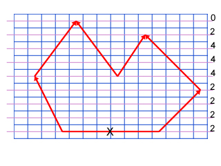

Donat un polígon definit pels seus n vèrtexs en coordenades de dispositiu ens proposem calcular el conjunt de pixels interiors al polígon i pintarlos del color definit per l'atribut corresponent.
Un dels algorismes més utilitzats és l'anomenat de Seguit del Contorn. Aquest algorisme aconsegueix omplir el polígon considerant seqüencialment les línies d'escombrat del dispositiu. Lleugeres variants de l'algorisme permeten omplir el polígon amb ratlles o altres mostres. A continuació l'algorisme de principi i un exemple del resultat en una pantalla de baixa resolució que mostra els píxels que s'omplirien de color.
accio Rasteritza_Poligon (Pol,color)
calcul_ymax_ymin(Pol,ymax,ymin)
per y en [ymax..ymin] fer
calcul_interseccio (y, Pol, P_int, npunts)
ordenar_punts_respecte_X (P_int, npunts)
per i en [1 .. npunts-1] pas 2 fer
pintar_línia_horitzontal(P_int[i],P_int[i+1],color)
fper
fper
faccio
L'acció calcul_ymax_ymin calcula les ordenades màxima i mínima del polígon que determinen les línies d'escombrat amb que intersecta el polígon. Per a cadascuna es calculen els punts de la seva intersecció amb les arestes del polígon (acció calcul_intersecció). Les interseccions trobades s'ordenen respecte la seva coordenada x (ordenar_punts_respecte_x). Posteriorment, considerant consecutivament els punts de intersecció com punt inici i punt final de segments horitzontals, es pinten els segments. Noteu que com els punts d'intersecció seran valors reals, per trobar el pixel inicial (final) s'haurà d'arrodonir el seu valor, aquest fet fa que no tots els pixels travessats per la rasterització de les arestes es considerin interiors.
Per a que l'algorisme funcioni correctament, cal que el nombre d'interseccions entre cada línia d'escombrat i el polígon sigui parell (mateix concepte que utilitzat en punt interior a polígon), altrament es poden omplir zones exteriors. Les línies d'escombrat sempre passen pels vèrtexs del polígon (ja que es treballa en coordenades de dispositiu), aquest fer pot produir incoherències. Per evitar-les les arestes es consideren obertes (no intersecten) respecte al vèrtex amb ordenada màxima i no es consideren les arestes horitzontals. Amb aquesta hipòtesi, les arestes que són intersecades per cada línia d'escombrat seran aquelles amb vèrtexs extrems amb ordenada màxima superior a la línia d'escombrat, i ordenada mínima inferior o igual. Podeu observar en la figura el correcte funcionament del criteri exposat.
|  |
Cal mencionar que per tal d'optimitzar els càlculs que comporten les interseccions, es possible utilitzar la coherència entre línies d'escombrat successives. Efectivament, si es coneixen dos vèrtexs (PI, PF) d'una aresta, queda determinada la seva pendent i un punt d'intersecció d'aquesta amb línies d'escombrat, per exemple PI. La intersecció amb la següent línia d'escombrat (y=PI[2]-1) es pot calcular com x= PI[1]-1/m (deduiu l'expressió a partir dels conceptes geomètrics del capítol 4)
Tenint en compte les consideracions anteriors l'eficiència de l'algorisme d'omplert s'incrementa considerablement, evidentment la seva complexitat és O(n) o n és el nombre d'arestes del polígon. Encara es poden pensar altres optimitzacions organitzant les arestes en llistes ordenades segons el seu vèrtex de coordenada màxima que permeten detectar ràpidament quines són les arestes actives (tallades) per a cda línia d'escombrat.
Varies consideracions: